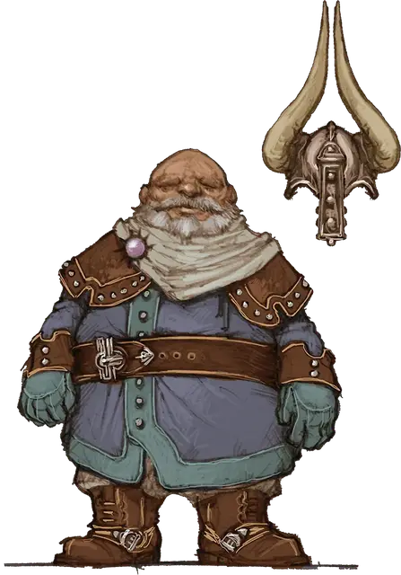

Амерго
Ahmaergo
Средний Гуманоид (Дварф), законно-злой, именной НИП

Класс Доспеха 18 (латы)
Хиты 143 (22к8 + 44)
Скорость 25 футов
| мод | спас | ||
|---|---|---|---|
| СИЛ | 20 | +5 | +9 |
| ЛОВ | 15 | +2 | +2 |
| ТЕЛ | 14 | +2 | +6 |
| мод | спас | ||
|---|---|---|---|
| ИНТ | 15 | +2 | +2 |
| МДР | 14 | +2 | +2 |
| ХАР | 12 | +1 | +1 |
Навыки Атлетика +9, Восприятие +6, Запугивание +5
Сопротивление урону яд
Чувства тёмное зрение 60 футов, пассивное Восприятие 16
Языки Общий, Дварфийский, Подземный
Опасность 9 (5000 опыта)
Бонус мастерства +4
Особенности
Второе дыхание (перезарядка после короткого или продолжительного отдыха). Бонусным действием Амерго может восстановить 20 хитов.
Упорный (2/день). Амерго может перебросить проваленный спасбросок, и обязан использовать новый результат
Дварфская устойчивость. Амерго совершаете с преимуществом спасброски для того что бы не стать отравленным.
Дополнительный урон. Если у Амерго остаётся больше половины его хитов, он дополнительно наносит 7 (2к6) урона при каждом попадании.
Действия
Мультиатака. Амерго совершает три атаки секирой.
Секира. Рукопашная атака оружием: +9 к попаданию, досягаемость 5 футов, одна цель. Попадание: 11 (1к12 + 5) рубящего урона.
Тяжёлый арбалет. Дальнобойная атака оружием: +6 к попаданию, дистанция 100/400 футов, одна цель. Попадание: 7 (1к10 + 2) колющего урона.
Описание
Амерго — дворецкий Занатара, помешанный на минотаврах. Хотя этот щитовой дварф ведёт себя прилично, он коварнее и подлее любого дьявола, но при этом беспрекословно верен своему хозяину- бехолдеру.
Амерго — второй после бехолдера по влиянию в гильдии Занатара.